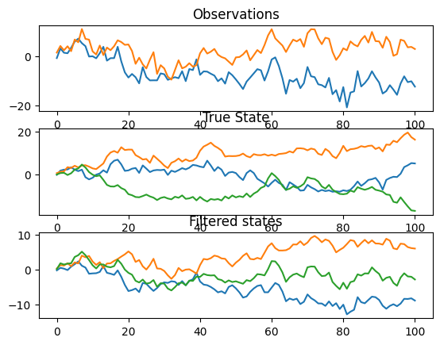
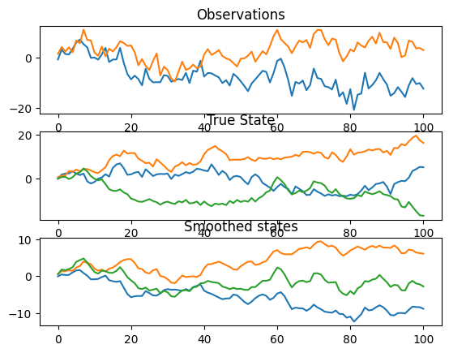

from isssm.glssm_models import common_factor_lcm
from isssm.glssm import simulate_glssm
import jax.random as jrnKalman filter and smoother variants in JAX
For \(t, s \in \{0, \dots, n\}\) consider the following BLPs and associated covariance matrices \[ \begin{align*} \hat X_{t|s} &= \mathbf E \left( X_t | Y_s, \dots, Y_0\right) \\ \Xi_{t | s} &= \text{Cov} \left(X_t | Y_s, \dots, Y_0 \right)\\ \hat Y_{t|s} &= \mathbf E \left( Y_t | Y_s, \dots, Y_0\right) \\ \Psi_{t | s} &= \text{Cov} \left(Y_t | Y_s, \dots, Y_0 \right) \end{align*} \]
The Kalman filter consists of the following two-step recursion:
Initialization
\[ \begin{align*} \hat X_{0|0} &= x_0\\ \Xi_{0|0} &= \Sigma_0 \end{align*} \]
Iterate for \(t = 0, \dots, n-1\)
Prediction
\[ \begin{align*} \hat X_{t + 1|t} &= A_t \hat X_{t | t} \\ \Xi_{t + 1 | t} &= A_t \Xi_{t|t} A_t^T + \Sigma_t\\ \end{align*} \]
Filtering
\[ \begin{align*} \hat Y_{t + 1 | t} &= B_t \hat X_{t + 1 | t} \\ \Psi_{t + 1| t} &= B_{t + 1} \Xi_{t + 1 | t} B_{t + 1}^T + \Omega_{t + 1}\\ K_t &= \Xi_{t + 1 | t} B_{t + 1}^T \Psi_{t + 1 | t} ^{-1} \\ \hat X_{t + 1 | t + 1} &= \hat X_{t + 1 | t} + K_t (Y_{t + 1} - \hat Y_{t + 1 | t})\\ \Xi_{t + 1 | t + 1} &= \Xi_{t + 1 | t} - K_t \Psi_{t + 1| t} K_t^T \end{align*} \]
kalman
kalman (y:jaxtyping.Float[Array,'n+1p'], x0:jaxtyping.Float[Array,'m'], Sigma:jaxtyping.Float[Array,'n+1mm'], Omega:jaxtyping.Float[Array,'n+1pp'], A:jaxtyping.Float[Array,'nmm'], B:jaxtyping.Float[Array,'n+1pm'])
filter
filter (x_pred:jaxtyping.Float[Array,'m'], Xi_pred:jaxtyping.Float[Array,'mm'], y:jaxtyping.Float[Array,'p'], B:jaxtyping.Float[Array,'pm'], Omega:jaxtyping.Float[Array,'pp'])
predict
predict (x_filt:jaxtyping.Float[Array,'m'], Xi_filt:jaxtyping.Float[Array,'mm'], A:jaxtyping.Float[Array,'mm'], Sigma:jaxtyping.Float[Array,'mm'])
| Type | Details | |
|---|---|---|
| x_filt | Float[Array, ‘m’] | \(X_{t\|t}\) |
| Xi_filt | Float[Array, ‘m m’] | $_{t|t} |
| A | Float[Array, ‘m m’] | \(A_t\) |
| Sigma | Float[Array, ‘m m’] | $_{t + 1} |
x0, A, B, Sigma, Omega = common_factor_lcm(
100, jnp.zeros(3), jnp.eye(3), 2., 3.
)
(x,), (y,) = simulate_glssm(x0, A, B, Sigma, Omega, 1, jrn.PRNGKey(53405234))No GPU/TPU found, falling back to CPU. (Set TF_CPP_MIN_LOG_LEVEL=0 and rerun for more info.)x_filt, Xi_filt, x_pred, Xi_pred = kalman(y, x0, Sigma, Omega, A, B)
fig, (ax1, ax2, ax3) = plt.subplots(3, 1)
ax1.set_title("Observations")
ax1.plot(y, label="y")
ax2.plot(x)
ax2.set_title("True State")
ax3.set_title("Filtered states")
ax3.plot(x_filt)
plt.show()
The Kalman smoother uses the filter result to obtain \(\hat X_{t | n}\) and \(\Xi_{t | n}\) for \(t = 0, \dots n\).
It is based on the following recursion with initialisation by the filtering result \(\hat X_{n | n}\) and \(\Xi_{n|n}\) and the (reverse) gain \(G_t\).
\[ \begin{align*} G_t &= \Xi_{t | t} A_t \Xi_{t + 1 | t} ^{-1}\\ \hat X_{t | n} &= \hat X_{t | t} + G_t (\hat X_{t + 1| n} - \hat X_{t + 1 | t}) \\ \Xi_{t | n} &= \Xi_{t | t} - G_t (\Xi_{t + 1 | t} - \Xi_{t + 1 | n}) G_t^T \end{align*} \]
smoother
smoother (x_filt:jaxtyping.Float[Array,'n+1m'], Xi_filt:jaxtyping.Float[Array,'n+1mm'], x_pred:jaxtyping.Float[Array,'n+1m'], Xi_pred:jaxtyping.Float[Array,'n+1mm'], A:jaxtyping.Float[Array,'nmm'])
smooth_step
smooth_step (x_filt:jaxtyping.Float[Array,'m'], x_pred_next:jaxtyping.Float[Array,'m'], x_smooth_next:jaxtyping.Float[Array,'m'], Xi_filt:jaxtyping.Float[Array,'mm'], Xi_pred_next:jaxtyping.Float[Array,'mm'], Xi_smooth_next:jaxtyping.Float[Array,'mm'], A:jaxtyping.Float[Array,'mm'])
x_filt, Xi_filt, x_pred, Xi_pred = kalman(y, x0, Sigma, Omega, A, B)
x_smooth, Xi_smooth = smoother(x_filt, Xi_filt, x_pred, Xi_pred, A)
fig, (ax1, ax2, ax3) = plt.subplots(3, 1)
ax1.set_title("Observations")
ax1.plot(y, label="y")
ax2.plot(x)
ax2.set_title("True State")
ax3.set_title("Smoothed states")
ax3.plot(x_smooth)
plt.show()
Square Root Filter
The Square Root Filter is based on Cholesky decompositions of the covariance matrices \(\Sigma\), \(\Xi\) and so on.
We use Cholesky decompositions of a matrix \(A\) of the form \(A = LL^T = R^TR\) where \(L\) is a lower triangular and \(R\) an upper triangular matrix.
We’ll use \(\grave A\) and \(\acute A\) to denote the lower and upper Cholesky decomoposition of \(A\), so that
\[ A = \grave A \grave A^T = \acute A^T \acute A \]
Implementation Detail
scipy.linalg.choleksy by default returns an upper cholesky root \(\acute A\) but np.linalg.cholesy a lower cholesky root \(\grave A\). To get the lower cholesky root from scipy.linalg.cholesky use argument lower = True.
Mnemoic: acute \(\acute A\) is cu_A and grave \(\grave A\) is cr_A.
The square root filter is then based on “Cholesky Matrix Calculus”:
Initialization \[ \begin{align*} \hat X_{0|0} &= x_0\\ \acute\Xi_{0|0} &= \acute\Sigma_0 \end{align*} \]
Iterate for \(t = 0, \dots, n-1\)
Prediction
Updating the covariance is based on the following QR-decompositions \[ \begin{align*} \begin{pmatrix} \acute\Sigma_{t + 1} & 0 \\ \acute\Xi_{t|t} A_t^T & \acute \Xi_{t | t} \end{pmatrix} = Q_{t + 1 | t} \begin{pmatrix} \acute\Xi_{t +1|t} & \acute \Xi_{t + 1 | t}G_t^T \\ 0 & \acute H_{t+1|t} \end{pmatrix} \end{align*} \] where \(Q_{t+1|t}\) is a orthogonal matrix and \(H_{t + 1 | t}= \Xi_{t | t} - G_{t}\Xi_{t + 1 | t}G_t^T\) which will be used in the smoothing step later.
The predicted states are as in the usual Kalman Filter: \[ \begin{align*} \hat X_{t + 1 | t} &= A_{t} \hat X_{t | t} \end{align*} \]
Implementation Detail
I will denote Cholesky decompositions in the following code with a cu (for upper triangular) and cl (for lower triangular) prefix.
That is cu_Xi_pred is \(\acute\Xi_{t + 1 | t}\) and cl_Xi_filt is \(\grave \Xi_{t + 1|t + 1}\) and so on.
sqrt_predict
sqrt_predict (x_filt, cu_Xi_filt, A, cu_Sigma)
Filtering
For the covariances we use \[ \begin{align*} \begin{pmatrix} \acute\Omega_{t + 1}& 0 \\ \acute \Xi_{t + 1 | t} B_{t + 1}^T & \acute \Xi_{t + 1 | t} \end{pmatrix} = Q_{t + 1 | t + 1}\begin{pmatrix} \acute\Psi_{t + 1 | t}& \acute\Psi_{t + 1 | t} K_{t + 1}^T \\ 0 & \acute \Xi_{t + 1 | t + 1} \end{pmatrix} \end{align*} \] where \(Q_{t + 1 | t + 1}\) is an orthogonal matrix.
For the filtered states note that
\[ \hat X_{t + 1 | t + 1} = \hat X_{t + 1|t} + K_{t + 1} (Y_{t + 1} - \hat Y_{t + 1 | t}) \]
and \(K_{t + 1}\) can be recovered from above matrix by inverting \(\acute \Psi_{t + 1 | t}\).
sqrt_filter
sqrt_filter (x_pred, cu_Xi_pred, cu_Omega, B, y)
Putting all of this together we obtain the Kalman filter in square root form:
sqrt_kalman
sqrt_kalman (y:jaxtyping.Float[Array,'n+1p'], x0:jaxtyping.Float[Array,'m'], cu_Sigma:jaxtyping.Float[Array,'n+1mm'], cu_Omega:jaxtyping.Float[Array,'n+1pp'], A:jaxtyping.Float[Array,'nmm'], B:jaxtyping.Float[Array,'n+1pm'])
cu_Sigma = jsla.cholesky(Sigma)
cu_Omega= jsla.cholesky(Omega)
cx_filt, cu_Xi_filt, cx_pred, cu_Xi_pred, G, cu_H = sqrt_kalman(y, x0, cu_Sigma, cu_Omega, A, B)
def Grammian(A):
return A.T @ A
vGrammian = vmap(Grammian)
npt.assert_allclose(cx_filt, x_filt)
npt.assert_allclose(cx_pred, x_pred)
npt.assert_allclose(vGrammian(cu_Xi_filt), Xi_filt)
npt.assert_allclose(vGrammian(cu_Xi_pred), Xi_pred)Square Root Smoother
We obtain Cholesky decompositions of the smoothed covariance matrices by the following QR decomposition:
\[ \begin{align*} \begin{pmatrix} \acute\Xi_{t + 1 | n} G_t \\ \acute H_{t + 1 | t} \end{pmatrix} = Q_{t|n} \begin{pmatrix} \acute \Xi_{t | n}\\ 0 \end{pmatrix} \end{align*} \]
and smoothed states by
\[ \begin{align*} \hat X_{t | n} &= \hat X_{t | t} + G_t (\hat X_{t + 1| n} - \hat X_{t + 1 | t}) \end{align*} \]
as \(G_t\) has already been obtained.
sqrt_smoother
sqrt_smoother (x_filt:jaxtyping.Float[Array,'n+1m'], cu_Xi_filt:jaxtyping.Float[Array,'n+1mm'], x_pred:jaxtyping.Float[Array,'n+1m'], cu_Xi_pred:jaxtyping.Float[Array,'n+1mm'], G:jaxtyping.Float[Array,'nmm'], cu_H:jaxtyping.Float[Array,'nmm'])
sqrt_smooth_step
sqrt_smooth_step (x_filt:jaxtyping.Float[Array,'m'], x_pred_next:jaxtyping.Float[Array,'m'], x_smooth_next:jaxtyping.Float[Array,'m'], cu_Xi_smooth_next:jaxtyping.Float[Array,'mm'], G:jaxtyping.Float[Array,'mm'], cu_H:jaxtyping.Float[Array,'mm'])
cx_smooth, cu_Xi_smooth = sqrt_smoother(cx_filt, cu_Xi_filt, cx_pred, cu_Xi_pred, G, cu_H)
npt.assert_allclose(cx_smooth, x_smooth)
npt.assert_allclose(vGrammian(cu_Xi_smooth), Xi_smooth)